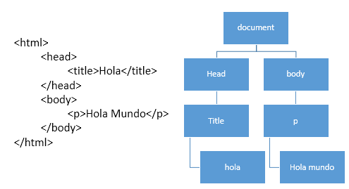

¿Por que Javascript?
-
Surge por parte de Brendan Eich, quien trabajaba en Netscape (1995)
-
Antes se llamaba Mocha y/o LiveScript en un acuerdo con Sun Microsystems (creador de Java) sedieron el nombre de Java y permitieron que se llamara Javascript
-
Javascript es un lenguaje basado en objetos
¿Para que sirve?
DOM (Document Object Model)
Modelo creado en para javascript para poder modificar los elementos en un documento html, en el, un documento html se ve representado como un arbol
Microsoft creo tambien un lenguaje para competir (Jscript) y en vista del pleito que estas empresas generaron se creo un estandar ECMAScript
Uso y aplicacion de JS
Java es un lenguaje que se interpreta unicamente del lado del cliente
- Animación
- Geolocalización
- Canvas
- Audio/video
- Procesamiento de formularios (validaciones)
- Ajax (comunicacion servidor)
- Elementos html dinamicos
- Juegos en el navegador
- Efectos y elementos flotantes
- Programacion del lado del servidor (Node.js)